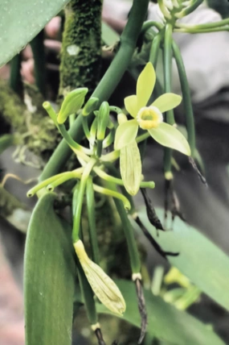
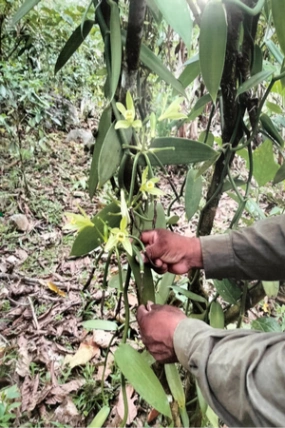

LA VAINILLA
La vainilla es una orquídea (vanilla planifolia) y abunda en la selva tropical húmeda. Es de hábito trepador cuyo tallo es de color verde, suculento, cilíndrico y fibroso, formado por entrenudos de 10 a 15 cm de largo.